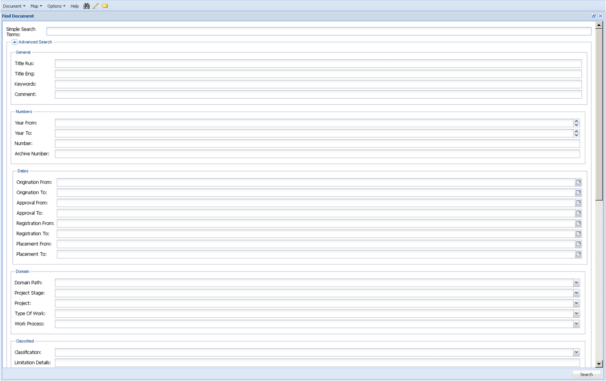

Расширенный поиск
Поле Advanced Search позволяет сузить поиск документов через заполняемую форму параметров поиска. Изначально поле представлено в свёрнутом виде.
При нажатии на пиктограмму поле развернётся и отобразит заполняемую форму параметров поиска.

Форма расширенного поиска представляет собой слегка видоизменённую форму карточки метаданных, в которой пользователь может задать любое число элементов поиска: одно или несколько требуемых значений, и не заполнять ненужные для поиска параметры.
При использовании элементов поиска, в которых присутствуют даты, можно задавать интервальный период «от» и «до», в который попадают метаданные документов.
Результаты расширенного поиска представляются в виде списка в дополнительном окне Found Documents (Найденные документы). Действия с найденными документами аналогичны действиям при простом поиске.